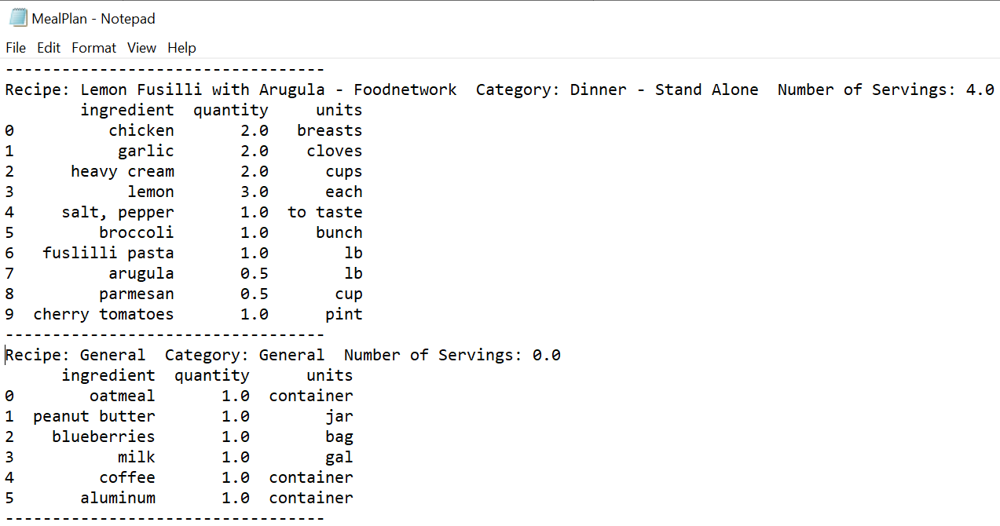
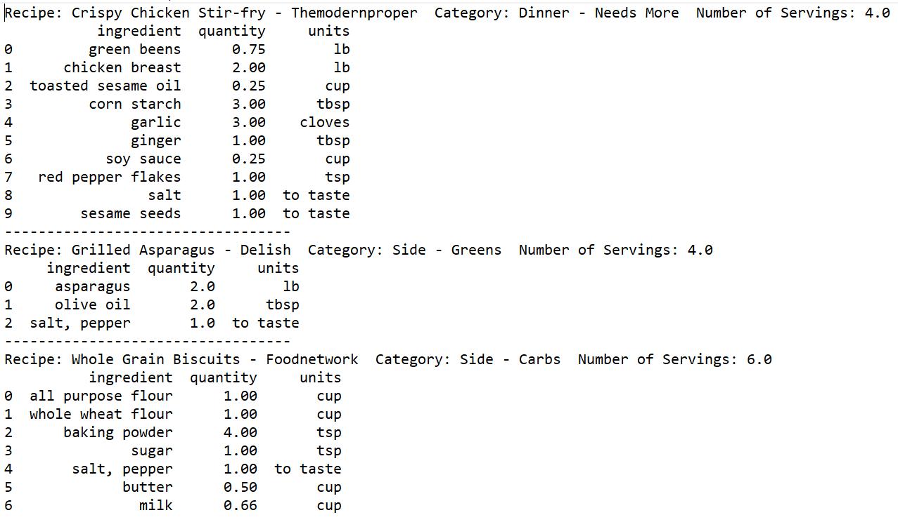
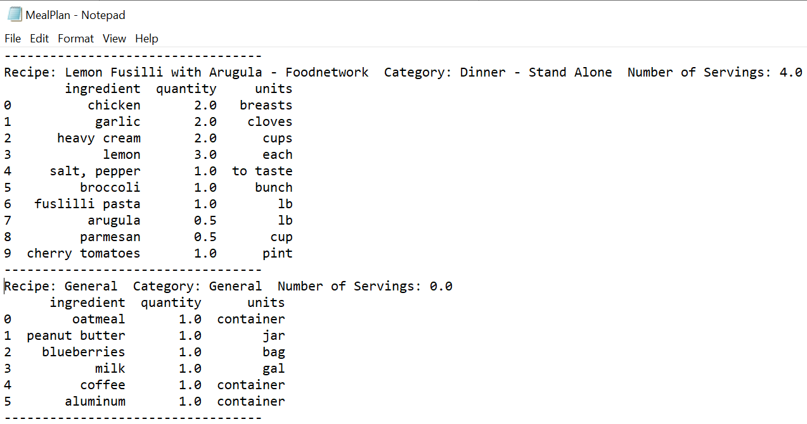
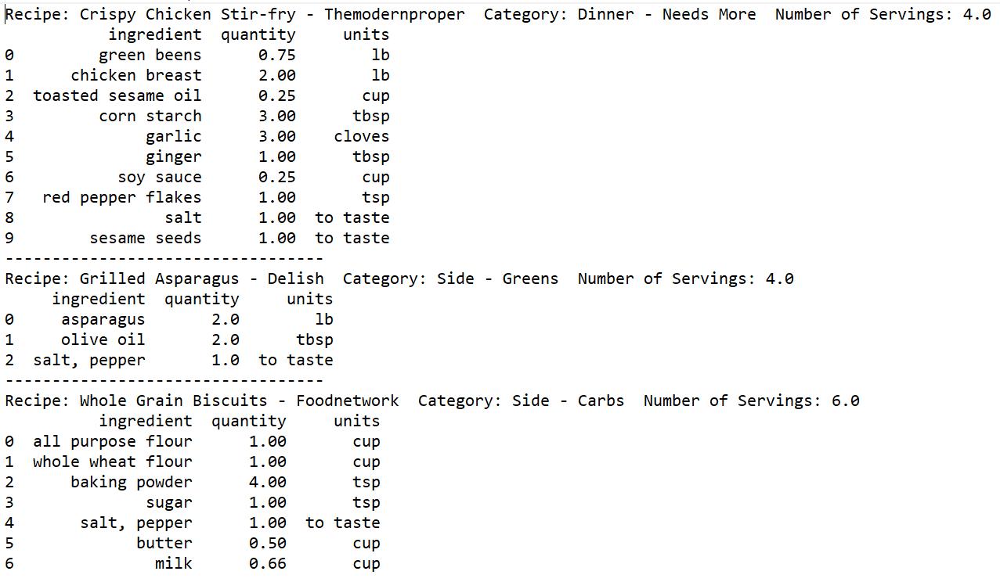

The Pantry
Creating Weekly Meal Plans
Every week, my wife and I spend about 5 minutes quickly putting together a poorly constructed meal plan. These conversations usually go something like this: What do you want? I don't know, what do you want? I don't know. Spaghetti? We always have spaghetti. Well what do you want? I don't know. And this cycle continues. The issue is that it is difficult to remember all of the recipes we have enjoyed in the past, and even if we had them all in front of us, we seem to have some decision fatigue when deciding which ones to have. And so, since at the time I was also wanting to learn SQL, I asked myself, "why not just make python do it for me?" And that's what we have here. This projgram will have the following capabilities:
- Ability to input and store recipes
- Can create a full week's meal plan with fewer than 3 steps (if it isn't simple, we won't use it)
- Can view and edit stored recipes
- Ability to search through all recipes based on multiple search terms
The GUI
The GUI we will be using for this project is Tkinter. It's the classic Python library for making GUIs, and it should have everything we need. Tkinter is actually very simple once you start using it. It's basic principle is 1) create the thing and 2) place the thing. So as you can see, this is a very basic gui. Two entry boxes and a few buttons. The Total Servings
section is mostly meant for how many servings you'll need through the week. For my wife and me, we need
four servings per day (1 per person for both lunch and dinner). This amounts to 28 servings total. The
Minimum Servings is asking what the smallest number of servings you would like a single meal to last. This
will be important if we want to ensure we always have leftovers. Broiled salmon may be delicious, but if it
won't last through leftovers, we probably don't want to include it (at least not during the work week).
The General Plan is the stuff we use every week. For instance, we have oatmeal and coffee every morning.
This ensures that the common items don't get forgotten during our planning process.
So as you can see, this is a very basic gui. Two entry boxes and a few buttons. The Total Servings
section is mostly meant for how many servings you'll need through the week. For my wife and me, we need
four servings per day (1 per person for both lunch and dinner). This amounts to 28 servings total. The
Minimum Servings is asking what the smallest number of servings you would like a single meal to last. This
will be important if we want to ensure we always have leftovers. Broiled salmon may be delicious, but if it
won't last through leftovers, we probably don't want to include it (at least not during the work week).
The General Plan is the stuff we use every week. For instance, we have oatmeal and coffee every morning.
This ensures that the common items don't get forgotten during our planning process.
 The resulting .txt document is quite large, so here's a snippet.

Note how the top recipe here is a "Dinner - Stand Alone" category. This means the entree itself can
exist as its own dinner, and no sides are needed. There is another category called "Dinner - Needs More"
that means the entree isn't by itself a full dinner, so it will need some sides. When the meal plan is
being built, all "Needs More" dinners will automatically be paired with one carb side and one vegetable
side, like the following example.

Also note how the sides are both at least as large as the entree. This is not by coincidence. The
program will first look for sides that are at least as many servings as the entree. This is important
because you don't want to run out of sides on Tuesday while your chicken lasts until Thursday. If it
can't find sides that are large enough, it will grab any side available.
Here is our search tab. This will be important for finding recipes when we don't want to just have a
randomly selected one.
The resulting .txt document is quite large, so here's a snippet.

Note how the top recipe here is a "Dinner - Stand Alone" category. This means the entree itself can
exist as its own dinner, and no sides are needed. There is another category called "Dinner - Needs More"
that means the entree isn't by itself a full dinner, so it will need some sides. When the meal plan is
being built, all "Needs More" dinners will automatically be paired with one carb side and one vegetable
side, like the following example.

Also note how the sides are both at least as large as the entree. This is not by coincidence. The
program will first look for sides that are at least as many servings as the entree. This is important
because you don't want to run out of sides on Tuesday while your chicken lasts until Thursday. If it
can't find sides that are large enough, it will grab any side available.
Here is our search tab. This will be important for finding recipes when we don't want to just have a
randomly selected one.
 If we want to see every single recipe, we only have to click the "Search Recipes" button with none of the
entries filled in.
If we want to see every single recipe, we only have to click the "Search Recipes" button with none of the
entries filled in.
 What if I wanted to pull up a recipe but didn't want to look through all of them? If I remembered part of
the recipe's name, I could enter that for a search. For instance, if I enter "salad" and search, I get this:
What if I wanted to pull up a recipe but didn't want to look through all of them? If I remembered part of
the recipe's name, I could enter that for a search. For instance, if I enter "salad" and search, I get this:
 What if we didn't know the name but knew it had shrimp in it? Or what if we didn't have anything in
particular in mind, but we wanted to do something with shrimp? Fortunately, we can search by ingredient.
What if we didn't know the name but knew it had shrimp in it? Or what if we didn't have anything in
particular in mind, but we wanted to do something with shrimp? Fortunately, we can search by ingredient.
 There are also a number of categories we can look for. If we wanted a dessert, for instance, we could pull
up all of the desserts.
There are also a number of categories we can look for. If we wanted a dessert, for instance, we could pull
up all of the desserts.
 In this case, we look for stand alone entrees. Perhaps we want quicker meals that require fewer dishes.
In this case, we look for stand alone entrees. Perhaps we want quicker meals that require fewer dishes.
 We can also search by serving size. If we have family coming over, grabbing the 2 serving meal probably
won't cut it.
We can also search by serving size. If we have family coming over, grabbing the 2 serving meal probably
won't cut it.
 We aren't restricted to just one search term, either.
We aren't restricted to just one search term, either.
 And if we want to actually interact with the recipes, we can always go here. This is also the location to
add new recipes to the database.
And if we want to actually interact with the recipes, we can always go here. This is also the location to
add new recipes to the database.
 For instance, entering the name here and clicking "View Recipe" button. From here we can update the recipe
if we found something wrong with it or remove it entirely if we decided it wasn't very good. And if we
wanted to add this recipe to this week's meal plan, it's as simple as hitting the "Add to Meal Plan" button.
For instance, entering the name here and clicking "View Recipe" button. From here we can update the recipe
if we found something wrong with it or remove it entirely if we decided it wasn't very good. And if we
wanted to add this recipe to this week's meal plan, it's as simple as hitting the "Add to Meal Plan" button.

pr <- residuals(lm.O1) /(1 - lm.influence(lm.O1)$hat)
PRESS <- sum(pr^2)
O1.anova <- anova(lm.O1)
tss <- sum(O1.anova$"Sum Sq")
R2P <- 1 - PRESS/(tss)
R2P

One can also look at the residuals for an indication of an issue. Here, there is a bit of a challenge, as there are only 30 measurements total. This can make it difficult to assess normality with high levels of confidence, but in this case the normality does appear to be somewhat off. Similarly, the residuals vs fits graph looks like it is increasing here, but this could be due entirely to chance. There are only two values that fit greater than 200 (as expected with a response surface design), and these two are a little high, but with only two it's hard to tell.
par(mfrow = c(2, 2))
plot(lm.O1)
Final Model
| Predictor | Coeff | P-Value |
|---|---|---|
| Intercept | 122.6 | 0.0000 |
| X1 | 2.15 | 0.0008 |
| X2 | -3.16 | 0.0000 |
| X3 | -1.38 | 0.0754 |
| I(X2^2) | 0.05 | 0.0000 |
| I(X3^3) | 0.07 | 0.0539 |
| X1:X4 | -0.17 | 0.0368 |
With this new model, you can see that all of the p-values are now significant. Additionally, our R^2 is now 0.95, only a 0.01 drop. Our R^2-pred, however, is now 0.91, a 0.1 increase.
step.O1 = stepAIC(lm.O1, direction = "both", trace = FALSE)
summary(step.O1)
pr.step <- residuals(step.O1) /(1 - lm.influence(step.O1)$hat)
PRESS <- sum(pr.step^2)
step.anova <- anova(step.O1)
tss <- sum(step.anova$"Sum Sq")
R2P <- 1 - PRESS/(tss)
R2P

The residuals plots for this model are a slight improvement over the initial one. The residuals are more normal, though they do appear to trail off
at the edges still. The vs fit chart still trails upward, but again, that is likley due to only having two higher-fitted measurements.
Several iterations of the final model were attempted to see if these defects in the model could be negated. However, none of them really improved any of
these charts. And so, either there are missing components that need to be understood in order to fully understand the model, or these slight deviations
are a side effect of the small sample size.
par(mfrow = c(2, 2))
plot(step.O1)
3D Surface

3D Surface plots are not always the best way to summarize regression models, mainly because only two factors can be plotted at one time. In this case, I am showing X2 (y) and X3 (x), so the impact of X1 is not apparent. However, there is one very important use for providing these plots. In the model, X3 has a larger coefficient for its squared term than X2, indicating that X3 is at least as useful if not more useful than X2 for controlling the output. However, the coefficient does not take into consideration the design space. This response surface design covered the full range of X2 and X3 settings (they actually covered a wider range than the normal window with the axial points). X2 has a much larger design range than X3, which is very apparent in this surface plot. Although X3 has a slightly higher coefficient, it has a fourth of the design space. Therefore, although X3 has the higher coefficient, X2 is a much more useful lever for controlling the output.
X1_C = 7.5
X2_V = -35:105
X3_V = -9.25:27.75
X4_C = 4.5
pred_func = function(x2, x3) predict(step.O1, newdata = data.frame(X1 = X1_C, X2 = x2, X3 = x3, X4 = X4_C))
pred_mat = outer(X2_V, X3_V, FUN = pred_func)
O1_surface = plot_ly(z = pred_mat, type = "surface")
O1_surface

A similar conclusion can be made with X1 vs X2. X2 is much more useful for controlling the output than X1
X1_V = -7.5:22.5
X2_V = -35:105
X3_C = 9.25
X4_C = 4.5
pred_func = function(x1, x2) predict(step.O1, newdata = data.frame(X1 = x1, X2 = x2, X3 = X3_C, X4 = X4_C))
pred_mat = outer(X1_V, X2_V, FUN = pred_func)
O1_surface = plot_ly(z = pred_mat, type = "surface")
O1_surface